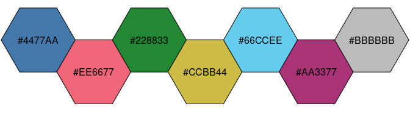
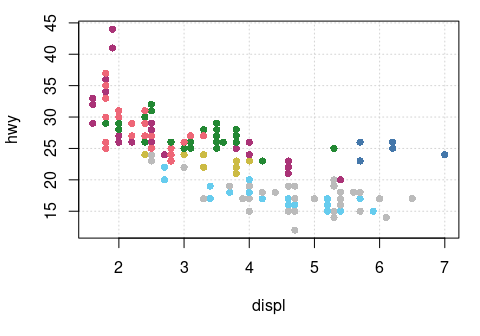
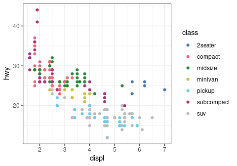
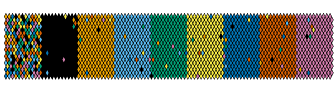
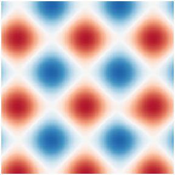
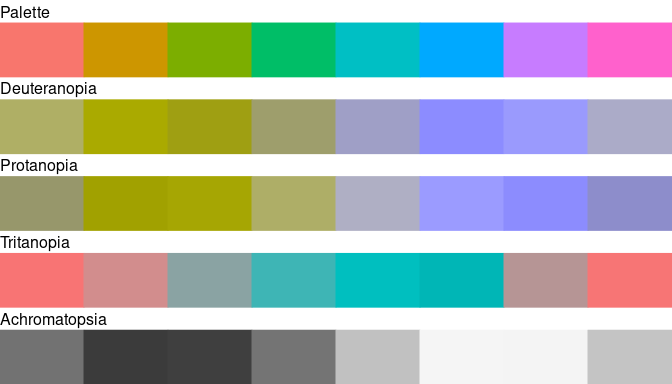

Overview
Color blindness affects a large number of individuals. When communicating scientific results color palettes must therefore be carefully chosen to be accessible to all readers.
This R package provides an implementation of Okabe and Ito (2008), Tol (2021) and Crameri (2018) color schemes. These schemes are ready for each type of data (qualitative, diverging or sequential), with colors that are distinct for all people, including color-blind readers. This package also provides tools to simulate color-blindness and to test how well the colors of any palette are identifiable. To simulate color-blindness in production-ready R figures you may also be interested in the colorblindr package.
Tol (2021) and Crameri (2018) offer carefully chosen schemes, ready for each type of data, with colors that are:
- Distinct for all people, including color-blind readers,
- Distinct from black and white,
- Distinct on screen and paper,
- Matching well together,
- Citable and reproducible.
See vignette("tol") and vignette("crameri") for a more complete overview.
For specific uses, several scientific thematic schemes (geologic timescale, land cover, FAO soils, etc.) are implemented, but these color schemes may not be color-blind safe.
All these color schemes are implemented for use with base R graphics or ggplot2 and ggraph.
To cite khroma in publications use:
Frerebeau N (2023). _khroma: Colour Schemes for Scientific Data
Visualization_. Université Bordeaux Montaigne, Pessac, France.
doi:10.5281/zenodo.1472077 <https://doi.org/10.5281/zenodo.1472077>,
R package version 1.11.0, <https://packages.tesselle.org/khroma/>.
A BibTeX entry for LaTeX users is
@Manual{,
author = {Nicolas Frerebeau},
title = {{khroma: Colour Schemes for Scientific Data Visualization}},
year = {2023},
organization = {Université Bordeaux Montaigne},
address = {Pessac, France},
note = {R package version 1.11.0},
doi = {10.5281/zenodo.1472077},
url = {https://packages.tesselle.org/khroma/},
}
This package is a part of the tesselle project
<https://www.tesselle.org>.Installation
You can install the released version of khroma from CRAN:
install.packages("khroma")And the development version from GitHub with:
# install.packages("remotes")
remotes::install_github("tesselle/khroma")Usage
## Install extra packages (if needed)
# install.packages("ggplot2"))
## Load packages
library(khroma)Available palettes (click to expand)
## Get a table of available palettes
info()
#> palette type max missing
#> 1 broc diverging 256 <NA>
#> 2 cork diverging 256 <NA>
#> 3 vik diverging 256 <NA>
#> 4 lisbon diverging 256 <NA>
#> 5 tofino diverging 256 <NA>
#> 6 berlin diverging 256 <NA>
#> 7 roma diverging 256 <NA>
#> 8 bam diverging 256 <NA>
#> 9 vanimo diverging 256 <NA>
#> 10 oleron diverging 256 <NA>
#> 11 bukavu diverging 256 <NA>
#> 12 fes diverging 256 <NA>
#> 13 devon sequential 256 <NA>
#> 14 lajolla sequential 256 <NA>
#> 15 bamako sequential 256 <NA>
#> 16 davos sequential 256 <NA>
#> 17 bilbao sequential 256 <NA>
#> 18 nuuk sequential 256 <NA>
#> 19 oslo sequential 256 <NA>
#> 20 grayC sequential 256 <NA>
#> 21 hawaii sequential 256 <NA>
#> 22 lapaz sequential 256 <NA>
#> 23 tokyo sequential 256 <NA>
#> 24 buda sequential 256 <NA>
#> 25 acton sequential 256 <NA>
#> 26 turku sequential 256 <NA>
#> 27 imola sequential 256 <NA>
#> 28 batlow sequential 256 <NA>
#> 29 batlowW sequential 256 <NA>
#> 30 batlowK sequential 256 <NA>
#> 31 brocO sequential 256 <NA>
#> 32 corkO sequential 256 <NA>
#> 33 vikO sequential 256 <NA>
#> 34 romaO sequential 256 <NA>
#> 35 bamO sequential 256 <NA>
#> 36 bright qualitative 7 <NA>
#> 37 highcontrast qualitative 3 <NA>
#> 38 vibrant qualitative 7 <NA>
#> 39 muted qualitative 9 #DDDDDD
#> 40 mediumcontrast qualitative 6 <NA>
#> 41 pale qualitative 6 <NA>
#> 42 dark qualitative 6 <NA>
#> 43 light qualitative 9 <NA>
#> 44 sunset diverging 11 #FFFFFF
#> 45 BuRd diverging 9 #FFEE99
#> 46 PRGn diverging 9 #FFEE99
#> 47 YlOrBr sequential 9 #888888
#> 48 iridescent sequential 23 #999999
#> 49 discreterainbow sequential 23 #777777
#> 50 smoothrainbow sequential 34 #666666
#> 51 okabeito qualitative 8 <NA>
#> 52 okabeitoblack qualitative 8 <NA>
#> 53 stratigraphy qualitative 175 <NA>
#> 54 soil qualitative 24 <NA>
#> 55 land qualitative 14 <NA>Color palettes and scales
color() returns a palette function that when called with a single integer argument returns a vector of colors.
## Paul Tol's bright color scheme
bright <- color("bright")
bright(7)
#> blue red green yellow cyan purple grey
#> "#4477AA" "#EE6677" "#228833" "#CCBB44" "#66CCEE" "#AA3377" "#BBBBBB"
#> attr(,"missing")
#> [1] NA
## Show the color palette
plot_scheme(bright(7), colours = TRUE)
data(mpg, package = "ggplot2")
## Use with graphics
par(mar = c(5, 4, 1, 1) + 0.1)
plot(
x = mpg$displ,
y = mpg$hwy,
pch = 16,
col = color("bright")(7)[as.factor(mpg$class)],
xlab = "displ",
ylab = "hwy",
panel.first = grid()
)
## Use with ggplot2
ggplot2::ggplot(data = mpg) +
ggplot2::aes(x = displ, y = hwy, color = class) +
ggplot2::geom_point() +
ggplot2::theme_bw() +
scale_color_bright()
Diagnostic tools
Test how well the colors are identifiable

## BuRd sequential color scheme
BuRd <- color("BuRd")
plot_tiles(BuRd(128), n = 256)
Simulate color-blindness
plot_scheme_colorblind(okabe(8))
## ggplot2 default color scheme
## (equally spaced hues around the color wheel)
x <- scales::hue_pal()(8)
plot_scheme_colorblind(x)
Contributing
Please note that the khroma project is released with a Contributor Code of Conduct. By contributing to this project, you agree to abide by its terms.